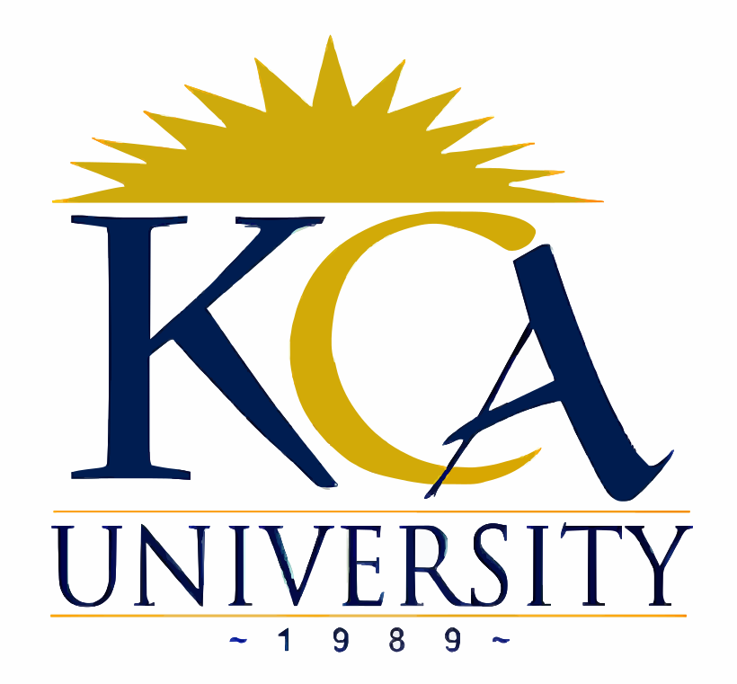

Welcome to Future Skills Training Centre
Future Skills Training Centre is a leading institution of higher learning in Kenya, offering a wide range of undergraduate and postgraduate programs in various fields. Our mission is to provide quality education that equips students with the knowledge and skills needed to succeed in their chosen careers.
At Future Skills Training Centre, we are committed to fostering a supportive and inclusive learning environment that encourages innovation, critical thinking, and personal growth. Our dedicated faculty members are experts in their respective fields and are passionate about helping students achieve their academic and professional goals.
We invite you to explore our website to learn more about our programs, faculty, and campus life. Whether you are a prospective student, a current student, or an alumnus, we hope you find the information you need and feel inspired to join our vibrant community at Future Skills Training Centre.
Services we offer
- Certificate and Diploma courses
- Undergraduate Programs
- Postgraduate Programs
- Short Professional programs
- Research Opportunities
- Career Services
Ready to Join Future Skills Training Centre? Register Now